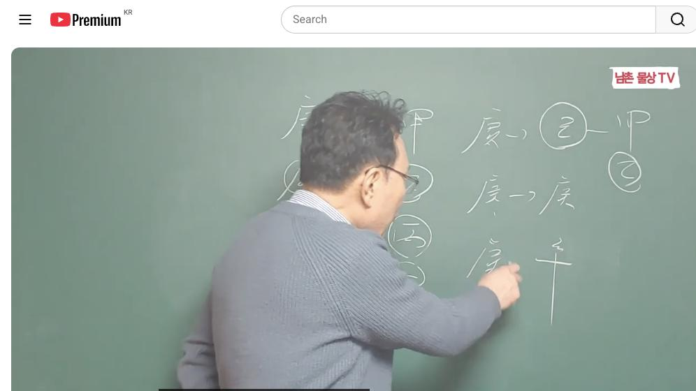

남촌물상TV 전체 문서 › 동영상 V0047
[기본원리]19강 경금일간은 돈이면 최고 인생을 바꾸는 비법 활용하는 방법은? 상담문의:010-3139-6645

| 문서 번호 | V0047 (동영상) |
|---|---|
| 영상 URL | https://www.youtube.com/watch?v=Tk5tdK62x20 |
| 영상 ID | Tk5tdK62x20 |
| 게시일 | 2024-02-08 |
| 길이 | 23:32 (1412초) |
| 조회수 | 3,215회 (수집 시점 기준) |
| 카테고리 | Howto & Style |
| 자막 | ko (자동생성) |
| 수집 시각 | 2026-08-30 17:03 (KST) |
영상 설명 (YouTube 설명 원문 그대로)
경금일간은 돈이면 최고 인생을 바꾸는 비법 활용하는 방법은? #기본원리 #경금일간 #비법
전체 자막 (501구간 · 타임스탬프 클릭 시 해당 장면으로 이동)
[0:01][음악]
[0:07]자 안녕하세요 반갑습니다 자 오늘이
[0:09]시간에는 그 오행에 대도 경금의 대한
[0:13]오행을 하겠습니다 자
[0:20]경금 자 경금은 오행에서 우리가
[0:23]어떻게 볼 것인가 자 대부분 이제
[0:26]금이라는 오행을 가지고
[0:29]어다면 생각 많습니다만 저희 경금은
[0:33]일단 일단 뭘로 보느냐 큰 칼로 보자
[0:37]오행에 따라서 우리 물상 큰 칼로
[0:39]보고 작은 칼은 신금은 작은 칼로
[0:41]보자는 얘긴데 그럼 금의 오행이라는
[0:44]성물이 어떤 성질을 가지고 있냐 그
[0:48]말입니다 칼이 사용하는 목적과
[0:50]사용하는 용도에 따라서 해석 구이
[0:53]달라진다고 볼 수 있는 거죠 그러면
[0:56]경금의 칼자루가 예를 들어서 갑목이
[0:59]큰칼 자료면 갑목이 필요하겠다 그러면
[1:03]자이 갑목이 필요했을 때 만약에
[1:06]일간이 갑목이 가장을 해 보자 내가
[1:08]일간이
[1:09]갑목이면 칼 차로가 고과제으면 건설이
[1:12]되는 것이고 자이 간단하게 이해할 수
[1:15]있는 거예요 내가 칼 자료를 가지고
[1:18]망치를 다를 수 있다면 칼을 휘둘 수
[1:20]있다면 이건 건설 또 할 수 있는
[1:22]직업이 되는 것이다 이렇게 볼 수가
[1:24]있는 거예요 그래서
[1:27]금은 크게 생각하지 마시고 간단하게
[1:30]내가 재물을 취할 수 있는게 가장
[1:33]필요한 거죠 그러면이 금의 칼로 봤을
[1:36]때 칼 자루가 반드시 필요하죠 그래서
[1:41]칼이라는 자체는 어떤 걸 성해 가지고
[1:44]있냐 칼 자루가 있어야 능력을 발휘할
[1:45]수 있는데 칼 자루가 없을 때 능력을
[1:48]바를 수 없는거다 그러면 칼은 뭐냐
[1:51]칼로스의 경금의 재물로서는 칼 자루가
[1:56]목인대 목이 반드시 필요하다는 얘기
[1:58]아닙니까 그러면 자 목은 나의 재물이
[2:02]그러면이 경금 일주이 제일 욕심이
[2:06]많은게 소위 재물의 욕심이 최고 많은
[2:09]사람들이 경금 일 주에요 그래서 쉽게
[2:12]얘기해서 너 뭘 택할래 돈과 명 어느
[2:15]쪽을 택하려 그러면 나는 돈을 언제
[2:18]우선적으로 갖고 싶다는 것이 경금의
[2:20]특징이기 때문에 가장 필요한 것은
[2:23]경금은 돈이 필요한 거예요 근데
[2:26]그러면 자 관은 뭐냐 관은 자 관을
[2:29]봤을 때 그러면 불이 관이다 그
[2:31]말이에
[2:32]오행이라서
[2:35]그러면 병화가 있고 정화가 있을거다
[2:38]그 말이 관으로 따져 보면 보면
[2:41]그러면이 관이 우리가이 불이 와서
[2:44]금을 녹일 수가 있잖아요 그러면이
[2:47]불이 우리 큰 칼이라는 것은 이미
[2:50]만들어지 제련소에서 칼을 두들겨서
[2:52]대장까지 두 만드는 칼이기 때문에
[2:55]불이 다시 와서이 금을 불로 녹인다고
[2:58]생각하면은 뭐가 될까요
[3:01]칼날이 무너지게 된다이 뜻이에요
[3:03]그러면 자이
[3:05]병화는이 관의 입장에서는이 금이
[3:09]반드시 경금 입장에서는 관이 필요
[3:12]없는 거예요 그 아주 필요 없느냐
[3:14]그건
[3:15]아니에요 성적인 용어로 보면 어느 때
[3:18]그럼 우리가이 관을 쓸 수가 있느냐
[3:22]쉽게 기해서 경금
[3:24]일주가이 관을 쓸 때 어떤 식으로 쓸
[3:27]것인가가 제일 중요한 거죠 간단게
[3:29]설명 하냐면 자 우리는 대충 어떤
[3:33]설명을 했어요 금은 어디서 놀기를
[3:35]좋아한다 물에서 놀기를 좋아한다
[3:38]대부분 이렇게 얘기했잖아요 물에서
[3:40]한다 병화는 어디 뜨기를 좋아한다
[3:43]임수의 뜨기를 좋아한다 자 그러면이
[3:47]병화가 사주의 오행이 이렇게 있다고
[3:50]하자거나 병화 운이 왔다고 가정을
[3:53]한다면이 금이 녹을 수가 있 녹여서
[3:56]별로 좋지 않아요 안 좋은데 평화가
[4:01]사주에이 물이 물이 있다고 가정하면
[4:05]병원 어디 뜨기를 좋아한다 임수의
[4:08]뜨기를 좋아한다 여기 와서 병화가
[4:10]뜨겠죠 자 병화 뜨면은이 병화는 빛을
[4:14]팔 나한테 직접적인 열을 가해서 나를
[4:17]녹이는게 아니라 병어가 임수에 떠서
[4:21]나한테 비추는 역할이기 때문에 나
[4:24]이럴 때 관에 나의 명예가 온다고
[4:26]한다이 말이에요 그 이런 사주를 뭐냐
[4:29]명예가 명예 그럼 이런 사람들이 첫째
[4:32]두 가지 욕심을 갖고 있지 첫째는
[4:34]재물의 욕심 두 번째는 뭐 명예의
[4:37]욕심을 갖고 있다 그래서 이런
[4:39]사람들은 쉽게해서 명예와 재관 욕심을
[4:42]다 가지고 있는 사람이다 이렇게
[4:44]구별하면 쉽게 이해할 수 있어요
[4:46]그래서이 이게 없는 사람들은 오직
[4:50]뭐요 돈에 대한 욕심만 굉장히 강하다
[4:54]나는 다 필요 없어 돈이
[4:56]최고야음 돈이 있어야 최고지 돈이
[4:58]없어 무슨 필요 있어 하는 사람들이
[5:00]쉽게해서이 임수가 물이 없는 사람들을
[5:03]얘기한다 그 말이에요 자 그러면 두
[5:05]가지 종류가
[5:06]있죠 임수의 물이 있을 때와 또 뭐가
[5:10]있을까요 계수의 물 있을 차이 있을까
[5:12]아니겠습니까 자 계수의 물 있을 때
[5:16]그러면 자
[5:19]볼까요이 경금이
[5:22]경금이 병화가
[5:24]와서이을 녹길 건데 계수의이 물이
[5:32]태양을 빗물로 내리게 되면 태양이 안
[5:37]뜨는 거죠 그러면 이때는 운이 괜찮아
[5:39]거죠 괜찮다 관이 와도 괜찮지만은 그
[5:43]말이 괜찮지만은 그럼 어떤 얘기야
[5:46]명예 욕심 없어진 거지이 사람은
[5:48]명예의 욕심을가 수 없는 거 계수와
[5:51]병화의 관계와 경금의
[5:53]관계로는 명예 욕심을 가질 필요가
[5:56]없다 그 말이에요 그니까 우리 때 가
[6:00]돈을가 아까 임수에 떠 있을 때
[6:03]관계는 돈과 명예를 동시에 갖고 싶은
[6:06]욕망이 강아지가
[6:08]베풀어요 근데이 금이라는
[6:12]자체는 물이 없을 때는
[6:15]무조건 재물의 욕심을 우선이라는 것만
[6:18]이해하시면 아 간단하게 사주가 설명이
[6:21]되잖아요 경교 취할 수 있는
[6:24]것 만약에 만약에 이런 사람들이 이제
[6:29]그러 관계는 명예가 아니라고 했어요
[6:32]그냥 금이 놓을 수 있는 것들은 저거
[6:34]그러면 우리가 간단히서 양관 관의
[6:37]법칙 한번 생각해 볼까요 자 비가
[6:39]내리게 되면이 병화는 정화의 기준으로
[6:42]바뀌죠 정화 기준 정화는 경금을 녹일
[6:46]수 없다는 얘기예요 그러면 자 그럼
[6:48]네가 어떻게 해서 뭘 한번 한번 해
[6:51]볼까 하고
[6:53]생각한다면 여기에이 정화를 이용을
[6:56]하면 되겠지 이용을 하게 한다는
[6:59]얘기는 뭐예요 합의 원리로 가보자
[7:01]정화가 뭘로 자 임수를 쓰라는 얘기는
[7:06]임수를 쓰다는 얘기는 정림 한목에
[7:08]을목을 만들란 얘기예요 만들라 얘기야
[7:12]그럼 자 정화에서 정림 한목 음수를
[7:16]만는 정와 네가 어떤 행동을 해줄
[7:20]거예요 임수 행위를 해보라 얘기예요
[7:22]그러면 임수는 뭐요 물이죠 그럼
[7:25]만약에 태이 없다 정할 때는 애관 지
[7:30]새로운 태양이 뜰 거 아니에요 그렇게
[7:32]되면 태양이 물위에 임수로 관계해서
[7:35]뜨기 때문에 이거 애국의 관계도 좋다
[7:38]말이에요 그렇게 되면 이제 임수에
[7:41]이걸 쓰게 되면 반대 지진을 해수가
[7:43]다른다 이런 정도까지만 생각하셔야 더
[7:47]깊게 이로는 지금 설명드리기 어렵다
[7:49]그래서 이렇게만 이해하시면 됩니다
[7:51]그래서 정화는 아까 에기도 나의
[7:55]재물을 작은 재물을 만들 수가 있다고
[7:58]가정한다면 구성에 만약에 이렇게 경금
[8:01]일주에 정 이이 있었다라고 가정하면
[8:04]부모 잘리 있다고 생각하면이 을목이
[8:07]된 거지 작은 재물을 부모한테 받을
[8:09]수 있는 상속의 여권도 될 수 있다
[8:11]이렇게 간단하게 이해할 수 있는
[8:12]거예요 그래서 경금이 활용하는 방법은
[8:15]제관의 활용은 이렇게 하시게 좋다고
[8:18]본다 그다음에 그다음에 재물로 사 하
[8:22]설명을 말았는데
[8:26]재물로 자 재물은 재물은 아까 목만
[8:30]설명을 드렸어요
[8:32]목만 자 갑목에 대한 재물은 나의 딱
[8:37]맞는 칼자루 때문에 본인이 원한
[8:39]재물이 되지만 을목의 재물은 사주
[8:43]오행 가되 있잖아요 자 재관이 그러면
[8:46]목이라는 것은 본인하고 합을 해서 월
[8:50]합을 할 거 아니야 그 말이야 나를
[8:52]나를 을경 합으로 나를 묶 건데 그
[8:55]말이 묶 건데 그러 자 뭘로 바
[8:58]신금이 바뀐다 금 바뀔 수가 있다는
[9:02]얘긴데이 목과 경금의 합의 구성의
[9:05]원칙으로 사주가 구성이 돼 있다면
[9:08]경금의 기질로 사는게 아니라 나는
[9:11]신금의 기질로 살 수가 있는 것이고
[9:13]그 말이고 만약에 연애가 연애가
[9:17]여기에 병화가 있다고 가정을 하면
[9:20]월경 합해 국과 자리에 금하고 합을
[9:23]해서 만약에 병식 합이
[9:26][음악]
[9:27]이루어진다면 대기업의 하게 되는데 재
[9:31]기업에 금물 하는데 어떤 회사로 갈
[9:34]것이냐는 금의 뿌리가 뭐냐 금이다 그
[9:37]말이에요 그러면 전자 전기 아이팅
[9:40]삼성이나 이런 전자 계통 회사로서 갈
[9:44]수 있는 그러한 직업을 택할 수도
[9:46]있다라고 이해할 수 있다 그래서
[9:48]직업과 제관과 관계성을 이해상 설명을
[9:52]드리자면 간단하게 어떤 네가 일을 할
[9:55]것이고 어떤 행위를 할 것이냐를
[9:57]설명을 드렸다 그 말입니다 그래서
[9:59]그래서 목이라는 것은 큰 나의 재물이
[10:02]때문에 내가 건설이라는 어떤 재물을
[10:05]취할 수 있는 여건이 되지만 을목의
[10:08]재물이란 것은 내가 변해서 어떤
[10:11]작용을 해 줘야 한다 그 말이야요
[10:13]그럼 우리가 고전에서는 내가 묶이면
[10:15]좋지 않다는 개념을 항시 가지고
[10:18]있지만 묶여서 그럼 평생 살 건데
[10:21]내가 신금에 별서 내 행위를 어떻게
[10:23]할 것인가가 제일 중요한 핵심이다 그
[10:26]말이에요 그렇게 되면 아까 얘기도
[10:28]원리가 신금이 되면 금이다 그러면 자
[10:30]국과 자리에 병호가 있다
[10:32]가정하면 기업하고 합을 해서 그
[10:35]뿌리는 유금이 때문에 저의 it 전자
[10:39]전기 계통에 관련된 일 할 수가 있다
[10:42]근데 현금에 뿌리는 신금이 그러면
[10:45]경신이 되는 거죠 그럼 자 병화와
[10:48]신의 관계는 아까 유금과 신유가 되기
[10:50]때문에 이건 전자 정기 컴퓨터 관련된
[10:52]일할 수 있다고 본다 그 말이
[10:54]간단하게 물상을 설명을 드렸습니다
[10:56]그래서 우리는 그 경금 의 특성이
[11:00]이런 걸 가지고 있고 오행의 국가로
[11:03]본다면 우리는 그 경금을 뭘로 본다
[11:06]경금을 경신을 경금을 미국으로 본다이
[11:10]말이야 국가 오행으로 본다면 이걸
[11:12]우리는 미국으로 본게
[11:16]좋다 그래서 국가별 오행으로 구별
[11:19]한다면 미국으로 봐라 그 말이에요
[11:22]만약 예를들 간단히 한번 한국은
[11:24]뭐예요 한국 갑인이 한단 한번 조금
[11:26]쉽게 넣 볼까요 자
[11:28]갑인이
[11:31]그러면 국가대 국가들로 본다면 한국은
[11:35]미국을 이용한 칼 역할을 해 준다면
[11:37]미국서 생활들 뭐예요 한국놈들은
[11:39]돈이야 그래서 미국 주도하면 어떻해
[11:42]미국 주 돈 내라 그러면 공짜가
[11:44]없어요 돈 내라 그런데 내부적인
[11:47]면에서는 이렇게 서로 상반된 관계를
[11:50]가지고 있다 그래서 서로가 실리를
[11:53]취하는 국가로 본다이 말이에요 간단히
[11:55]본 거예요 그래서 우리는 나중에 이제
[11:57]국가와 국가의 구군을 볼때 때
[11:59]활용하는 방법은 그렇다고 설명을
[12:01]드리고 그럼 그다음에는 뭐냐냐 이제
[12:04]식간에 대해서 한번 설명을 드려
[12:06]보겠습니다 경금과 시간에 대해서 자
[12:13]경금과 갑목의 관계를 보자 갑목의
[12:16]관계 자 경건과 갑목의 관계는 아까
[12:19]앞 전말에 설명해 드리이 굉장히 좋은
[12:22]관계죠 금의 칼 자루가 왔으니 나의
[12:25]재물이 오기 때문에 굉장히 좋은데
[12:28]근데 항시 이 사주 구성에 따라서는이
[12:31]경금이 것은 갑목의 관계성 내 재물이
[12:35]때문에 좋다고 얘기해서 만약에 그
[12:38]재물이 와서 무조건 좋다 그건
[12:40]아니에요 우리들이 그 고전에 얘기한
[12:44]것은 무조건 재물이 오면 재운이 오
[12:47]좋아 관운이 어때 하고 설명을
[12:49]드렸는데 재운이 온다고 해서 다
[12:52]성공하는 거 아니다 그 말에 그러면
[12:54]만약에 경호가 있다고 가정해 보자
[12:58]경호 그러면 물 수분이 없을 물이
[13:02]없다면 물이 없다면 계수가 됐든 애를
[13:05]들어서 임수가 됐든 물이 없으면
[13:09]재물이 잘 안 돼요 왜 그러냐면
[13:11]나무가 성장한데 반 물이 있어야 살아
[13:14]되고이 나무가 잘못하면이 물이 없다는
[13:17]여기에서 술의 개념을 가지기 때문에
[13:20]금이 녹을 수도 있 사업 실패하는거다
[13:23]그 말이 그래서고 생각할
[13:26]때는 재 재물이 무조건 돈 본다 너
[13:30]성공할 거야 돈 잘 벌거다
[13:31]이렇게하는데 실질적인 재물에 돈 번
[13:33]건 아니다이 말 이런 케스가 망하는
[13:35]거예요 그러기 때문에 물이 있으면
[13:38]안망해 근데 물이 없는 사주가
[13:41]재물복이 온다고 재물이 좋습니다 당신
[13:43]성공할 거예요 이렇게 얘기할 때는
[13:46]반드시 문제가 따르게 된다 바로 이런
[13:48]점이 때 망하는 거예요 그래서
[13:50]경오일주 라면 반드시 호수의 개념을
[13:53]가지고 있기 때문에이 물이 없다고
[13:56]화장하면 자기가 재물로써 뭘로 나를
[14:00]녹이 수 때문에 재물에 손상이 온다고
[14:02]본다 그 그 망하는 거예요 그래서
[14:04]재물이 온다고 다 돈 잘먹게 아니라
[14:07]재물이 와도 망하는 있다는 것을
[14:09]이해하시면 된다 이게 제 소위 갑목과
[14:13]경금의 관계에 간다는 설명을 드린
[14:15]거예요 자
[14:17]그다음에
[14:19]경금과 을목의 관계 자 을목의 관계
[14:22]아까 그랬잖아요 을목의 관계는 을경
[14:26]합으로 해서 뭐로 바뀐다 신금
[14:28]바뀐다고 요 금으로 그래서 우리는이
[14:32]사주 특성을 본다고 보면 을경 합의
[14:35]관계는 내가 묶기는 결과 되지만 이걸
[14:38]어떻게 활용하는 방법을 이용을 하셔야
[14:41]돼 그래서 그저 묶기가 안 좋다는
[14:43]개념을 버리시고 내가 을경 합을 해서
[14:47]신금이 되면 뿌리가 유금이 그 아까
[14:50]쉽게해서 유금의 행위를 할 수밖에
[14:53]없다는 것을 설명을 드린다 그
[14:54]말이에요 그래서 천간 합에 올려서
[14:57]변해서 쓰는 방법은
[14:59]묶여 있을 때 안 좋을 때 어떻게
[15:01]하면 내가 살아 나갈 수가 있어 어
[15:04]그럼 묶여 있다고 항시 우리가 안
[15:05]좋게 살아가야 되겠냐 그 말이에요
[15:08]어느 때 잘 살 수 있고 어느 때 저
[15:10]잘될 수 있는가를 한번쯤 생각해보고
[15:12]방법을 찾아야 될 거 아니야 이것이
[15:14]우리가 전할 수 있고 우리가
[15:16]상담자이 얘기해서 어떻게 하면 네가
[15:19]잘 살 수 있다는 것을 미리 예측으로
[15:21]설명할 수 있다라고 보면 된다 그
[15:22]말이요 그래서 반드시 부이 이루어졌을
[15:26]때 그지 안 좋다는 개념을 버리시고
[15:29]어떻게 하면 잘 할 수 있는가를
[15:31]설명을 간단하게 드렸다 그 말입니다
[15:35]그다음에
[15:38]경금과 병화의 관계 자 병화 관계
[15:41]그러면 대부분이 봤을 때 우리는 뭐라
[15:43]그럴까요 고전에서는 아 관이 와서
[15:45]굉장히 좋네 관이 좋을게 없습니다
[15:48]우리 물상에서는 아까 제가 그랬죠
[15:51]병화는이 불이라 것은 이미 우리는
[15:54]우리 물상에는 추어 만들어진 칼로서
[15:57]전제를 보기 때문에 풀이 녹아면
[16:00]칼날이 불 갖다 대면 칼날이 무뎌지기
[16:03]때문에 능력 파리가 안 되고 좋지
[16:05]않다 개념어 그럼 자 안 좋으면
[16:08]어떻게 할 건데 자 임수를 찾아가면
[16:11]돼요 임수를 그러면 쉽게 얘기해서
[16:14]임수를 찾아가서이 물이 물을 위해
[16:17]태양이 물위에 뜨게 만들어서 빛을
[16:19]보든지 계수의 운이 계수를 만들 되면
[16:24]계수가 태양에 가려서 결과적으로이
[16:28]태양 뜨거운 태강이 경금을 녹일 수
[16:31]없게끔 하면 된다 그 말이에요 그래서
[16:33]어떻게 하는 방법을 제시해 줘야 돼요
[16:35]그래서 이런 관계성은 이런 방법을 택
[16:38]해야만이
[16:39]병화와 경금의 관계가 좋아진다고
[16:42]설명할 수 있다 자 이게 설명을
[16:44]드리고 그다음에
[16:47]그다음에 자 경금과 또 뭐 있어요 자
[16:51]경금과 정화의
[16:53]관계 자 정화의 관계는 거크 나쁜
[16:56]관계는 아니죠
[16:57]왜 종환은 경금을 녹일 수가 없기
[17:01]때문에 이걸 이용을 해야지 이걸 이용
[17:03]이거 이용을 해서 아까 얘기한 임수를
[17:06]끌어다가 정립 한목 을목을
[17:08]만들면 내가 변하고 온다 그 말이야
[17:11]나의 작은 재물이 올 수가 있고이
[17:13]재물과 나하고 합을 하게 된다면 신금
[17:17]음으로서 재물 돈을 벌어라 그
[17:18]얘기예요 간단하게 설명을 드릴 수
[17:20]있는 것 그래서이 정화의 관계는
[17:23]어떻게 네가 활용할 것인가를
[17:25]연구해봐야 된다 반시 우리는 뭐 자서
[17:29]어 관위 와서 좋지 않다는 개념을
[17:32]버리시고 와서 안 좋으면 어떻게는데
[17:34]좋으면 어떻게 뭘 어떻게 할 거냐가
[17:36]중요한 거지 그래서 이런 방법의
[17:39]응원한 방법을 우리 물에서는 쉽게
[17:42]이해를 하셔야 된다 그 말이에요
[17:43]그다음에
[17:44]그다음에 경과 뭐 있어요 경과 자
[17:48]그다음에 뭐예요 토죠 자 무토 자
[17:53]그러면이 무토 관계는 그냥 토생
[17:56]관계로 이해하시면 안 된다고 상시
[17:58]토에서 네가 뭐 할
[18:01]거냐예요 그러면 자 토에서 뭐예요
[18:04]나무를 심어야 될 거 아니요 그럼 자
[18:06]토라 땅에서 내의 재물인 목을 심어서
[18:10]만들어 먹고 살아라 그 얘기예요
[18:12]이것을 얘기 그러면 자 여기에서
[18:15]갑목을 예를 들어서 심을 거냐 을목을
[18:17]심을 거냐요 중에 어느 쪽이냐 그
[18:19]말이에요 그러 반드시 갑목이 심을
[18:22]좋겠죠 그러니까 목이란 나무를 하면은
[18:25]자 그 럴 때는 뭘까요 내가 부동산을
[18:28]하면 돈이 되는 거 아니야 자 목을
[18:31]쓴다는 얘기에요 그럼 교육해서 좋다
[18:33]그러 건설회사는 이쪽 처분해 좋네
[18:36]간단하게 이해할 수 있는 걸로 설명할
[18:38]수가 있는 거예요 그래서이 무토 네가
[18:40]뭘 할 건데요 그래서 우리가 식관대
[18:43]대용 그 대충이라는 것 대용하는
[18:46]것은 직관에서 합해서 무엇이 영향이
[18:49]온가 설명을 드리는 거예요 그러면이
[18:52]무토가 운이 왔을 때 너는 무엇에서
[18:54]먹고 살아라는 얘기예요 이것을 설명을
[18:56]드렸기 때문에 자세하게 여러분들은이
[18:58]에서 이해하시면 된다 그 말이에요
[19:00]그래서 아까 무토는 어떻게 갑목을
[19:03]심어서 돈을 버게 좋다 그렇게 해서
[19:06]하시면 제일 좋은거다 이해하셨죠
[19:08]그다음에
[19:09]그다음에
[19:12]경금과 그다음에 기토 자
[19:16]기토 경금과 기토는 작은 땅과 식에서
[19:20]칼의 관계 경금의 관계란 말이에요
[19:22]그럼 여기에서 네가 뭐 할 건데 뭐
[19:25]할 건데 그럼 너는 여기에서 모 이란
[19:29]목이란 나무를 불러다가 만든다 그럼
[19:33]감목 하은 뭐예요 그냥 칼자루 된
[19:36]게라 합을 의해서 들기 때문에 이건
[19:38]을목이 되겠지 그러면 자 을목의
[19:41]행위가 결과적으로을 합 신금이 되면
[19:44]그 말이지 신금의 뿌리가
[19:50]금이기업 기토 관계 각기 음과 양간의
[19:54]보 대부분이 끌어다 쓰기 때문에
[19:56]어떻게 뭘 끌어다가 어떤 행위를
[19:59]하느냐를 머리에 두고 염두한게 좋다
[20:01]그다음에 볼까요
[20:05]경금과 경금과 그다음 경금과 겸
[20:09]이죠 이렇게 금이 두 개로 있어요
[20:12]대위 4중에 그 내가 일간과 월래
[20:16]금이 있다 대이 부딪히는 거예요 칼과
[20:19]칼이 부딪친다 근데 어느 것이 유하가
[20:23]중요한 거야 내가 내가
[20:26]일간이 재를 깔고 있는 냐 여기 관을
[20:29]깔고
[20:31]있냐요 어느 어느 서로가 경쟁자가
[20:35]나한테 제관을 가지고 있는가를 바라
[20:37]그 말이에요 그러면 쉽게 얘기해서
[20:40]이거는을 을을 불러올 거 아닙니까
[20:43]서로가 재물을 취한다고 아무 용구
[20:44]없다 보면 사주가 쉽게해서 목이 없는
[20:47]사주다 무죄 사주다을 늘리다 보면
[20:51]병화를 끌고 겠죠 그 국가의 관련
[20:53]대교 관련 일한게 좋다라고 볼 수
[20:54]있다 이렇게 쉽게 설명을 드릴 수
[20:57]있는 거예요 그다음에 그다음에
[21:00]그다음에 또 뭘까 해서요 신금과
[21:02]경금의 관계 자
[21:05]경금과 신금의
[21:07]관계예요 그럼 자 작은 칼과 큰
[21:10]칼이다 그럼 내가 유리한 거지 경금이
[21:12]유리하는데
[21:13]유리하는데 그러면 어떻게 해야 될
[21:16]것이냐 그 말이에요 어떻게이 경금
[21:18]신금을 어떻게 할 것이냐 신금을
[21:20]이용을 해야죠 신금은 신금은 병화를
[21:25]끌어다가 합수 물을 만들어 주면
[21:29]나한테 저 병화가 계수 역할을 해 줄
[21:31]수 있는거다 그래서 신금을 어떻게
[21:34]이용하냐예요 신금을 어떻게 이용하느냐
[21:37]합을 이용을 해서이 물을 만들어
[21:40]주게 되면 결 가지고 금이 편안하게
[21:43]살 수가 있다는 얘기다 간단하죠 자
[21:46]그다음에 그다음에 경금과 뭐가
[21:50]있어요
[21:52]임수지 자 금은 물에서 놓기를 좋아합
[21:55]이건 굉장히 좋은 거예요 관이 와도
[21:58]좋고 재가 와도 좋다 아 비가오나
[22:02]눈이나 다 좋다 얘기예요 그럼 그
[22:03]얘기는 뭐냐 그러면 금은 물에서
[22:06]놀기를 좋아하고 병화 태양이 오더라도
[22:09]태양이 무리에 떠서 나한테 빛을
[22:11]발산시켜 좋은 거고 정하고는 정림 한
[22:15]목으로 을목이 재물이 와서 좋은 거고
[22:17]이렇게 간단하게 얼마나 좋은 거예요
[22:19]그래서이 임수와 정화의 관계는 굉장히
[22:23]좋은 경기의 관계는 굉장히 좋은
[22:26]관계로 위하시면 되는 거예요 그래서
[22:28]제일 좋은 건 뭐예요 우리가 다
[22:31]짚어보면이 임수와 금의 관계 반드시
[22:33]금은 물래 놀기를 좋아한다는 답이
[22:35]나온 거예요 그래서 금은 물에서
[22:38]놀기를 좋아한다 이렇게 하는 거예요
[22:40]그다음에 마지막으로 경금과
[22:46]계수적 자 계수의
[22:48]관계이
[22:50]관계는 태양이 불이 와도 결과 나한테
[22:53]피해만 안 줄 따름이에요 그래서 a
[22:57]관운이 와도 나한테 명예를 주는게
[23:00]아니라 내가 활동할 수 있는 소위
[23:02]불에 녹지 않기 때문에 돈을 벌 수
[23:05]있는 목을 차지하거나에서 을목을
[23:08]차지하지 해서 돈을 벌 수 있는
[23:10]역할을 한다는게이 계수와 경금의 관계
[23:13]서로이 관계가 설명이 지금 다
[23:15]드렸습니다 그래서 시가를 설명을
[23:17]드렸는데 아 다음 시간에도 이제
[23:20]우리는 이제 아 경금 다음에 신금 할
[23:22]거예요 그래서 이번 시간에 관과
[23:26]경금의 관계 쭉 설명을 드렸습니다
[23:28]다음 시간에 더 좋은 영상으로 만들어
[23:30]드리겠습니다 감사합니다
칠판 원국 판독 (영상 프레임을 AI가 시각 판독 · 원판 대조 필수)
구분 불명
천간
甲
천간
庚
천간
乙
천간
丙
천간
辛
판독 신뢰도: 낮음
판독 노트: 칠판: 좌측 甲·〇丙 세로열, 우측 庚→〇乙-甲 / 庚-庚 / 庚-辛 다단 관계도(경금 재성 설명) · 시점 21:12 · 해당 장면 보기↗
자막은 YouTube에서 제공하는 한국어 자동음성인식(ASR) 트랙의 원문입니다. 고유명사·한자 용어·숫자 표기에 자동인식 특유의 오류가 있을 수 있어, 원문을 가능한 한 그대로 보존했습니다. 위에 칠판 원국 판독 섹션이 있는 영상은 화면 프레임을 AI가 시각 판독한 것으로 신뢰도 표기를 확인하고, 없는 영상은 화면 도표가 문서에 포함되지 않습니다.